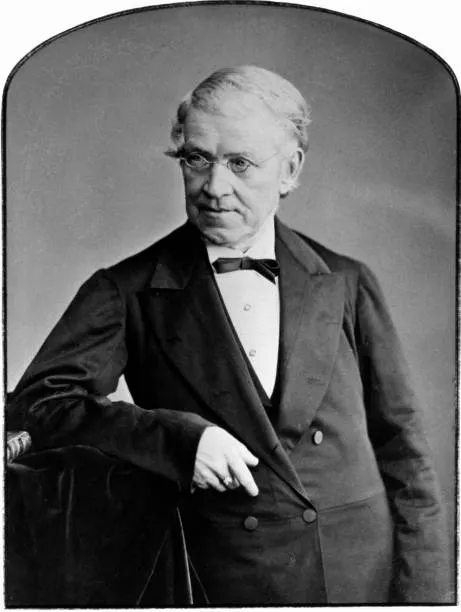

Charles Wheatstone (1802-1875) był brytyjskim wynalazcą, fizykiem i inżynierem, znanym przede wszystkim z wynalezienia telegrafu elektrycznego oraz opracowania wielu innych innowacyjnych urządzeń. Jego prace miały ogromny wpływ na rozwój technologii komunikacyjnych i nauki w XIX wieku.

Wynalazki:
Telegraf elektryczny - Wheatstone opracował telegraf, który umożliwiał przesyłanie wiadomości na duże odległości za pomocą przewodów elektrycznych.
Wyznacznik Wheatstone'a - urządzenie służące do pomiaru oporu elektrycznego, które jest nadal używane w laboratoriach i przemyśle.
Wynalazki w dziedzinie optyki - Wheatstone pracował nad różnymi urządzeniami optycznymi, w tym nad spektroskopem i mikroskopem.
Prowizoryczny mikrofon - Charles Wheatstone jako pierwszy w 1827 roku skonstruował mikrofon i wprowadził on termin “mikrofonu”.